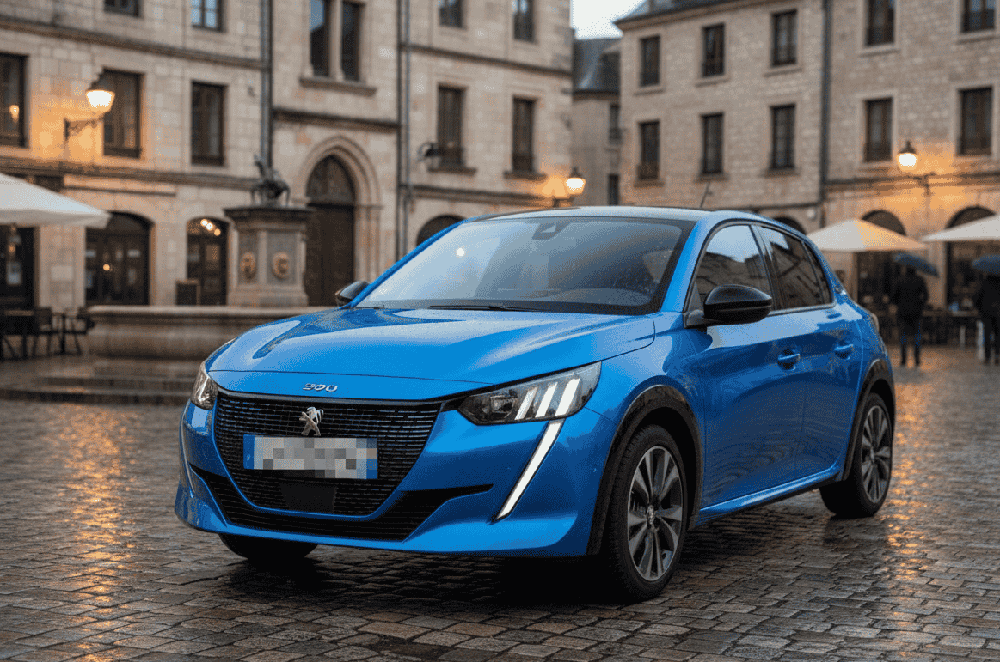

Cuando hablo de coches eléctricos económicos, suelo centrarme en modelos que ya han demostrado su valía en el mercado español, como el BYD Dolphin o el MG4 Electric. Pero el panorama se ha ampliado notablemente en los últimos meses y hay dos propuestas que merecen un análisis en profundidad: el Omoda 5 EV y el Peugeot e-208.
Son dos coches que, en principio, podrían parecer muy diferentes — un SUV compacto chino frente a un utilitario europeo —, pero que compiten directamente por el mismo tipo de comprador: alguien que quiere pasarse a la movilidad eléctrica sin hipotecar su cuenta corriente y sin renunciar a un equipamiento moderno. Vamos a ver qué ofrece cada uno.
Omoda 5 EV: el SUV eléctrico de Chery al detalle
Omoda es una de las submarcas del grupo Chery, el mayor fabricante de automóviles de capital privado en China. Su desembarco en España se produjo en 2024 con el Omoda 5 de combustión, y la variante 100% eléctrica no tardó en llegar. Se trata de un SUV compacto con 4,40 metros de largo que apunta directamente a modelos como el Hyundai Kona Electric o el propio MG ZS EV.
Lo primero que llama la atención es su diseño exterior. Omoda ha apostado por líneas angulosas y un frontal cerrado con detalles LED que le dan un aspecto futurista. No pasa desapercibido, y eso es intencionado: la marca quiere posicionarse como una alternativa con personalidad frente a las opciones más convencionales del segmento.
Motorización y batería: El Omoda 5 EV equipa un motor eléctrico delantero de 150 kW (204 CV) y 340 Nm de par, alimentado por una batería de 61 kWh de capacidad neta que le otorga una autonomía homologada de 430 km según el ciclo WLTP. Según datos publicados por la propia marca en su web oficial (omoda.es), la aceleración de 0 a 100 km/h se completa en 7,6 segundos.
Carga: En corriente continua (DC), admite hasta 80 kW, lo que permite pasar del 30% al 80% en aproximadamente 28 minutos. En corriente alterna (AC), acepta cargadores de hasta 11 kW trifásicos y 6,6 kW monofásicos, con una carga completa en wallbox doméstico en torno a 9-10 horas según la potencia contratada.
📐 Dimensiones y espacio del Omoda 5 EV:
- • Largo: 4.400 mm
- • Ancho: 1.830 mm
- • Alto: 1.620 mm
- • Distancia entre ejes: 2.630 mm
- • Maletero: 380 litros (según ficha técnica oficial)
Fuente: omoda.es
En cuanto a equipamiento, incluso el acabado de acceso incluye pantalla central táctil de 12,3 pulgadas, cuadro de instrumentos digital de 7 pulgadas, cámara de visión trasera, climatizador automático, sensores de aparcamiento delanteros y traseros, y compatibilidad con Apple CarPlay y Android Auto inalámbricos. En versiones superiores se añade techo panorámico, asientos calefactados, carga inalámbrica para el móvil y el sistema de sonido Sony.
En materia de seguridad, el Omoda 5 EV obtuvo 5 estrellas en Euro NCAP en su evaluación de 2024, con puntuaciones destacadas en protección de ocupantes adultos (89%) y asistentes de conducción (80%). Incluye de serie frenado autónomo de emergencia, alerta de cambio involuntario de carril, control de crucero adaptativo y reconocimiento de señales de tráfico (Euro NCAP - Omoda 5).
Peugeot e-208: el compacto eléctrico europeo de referencia

El Peugeot e-208 se ha renovado en 2025 con mayor autonomía y potencia de carga rápida
El Peugeot e-208 no necesita muchas presentaciones. Lanzado originalmente en 2019, fue uno de los primeros utilitarios eléctricos europeos en plantarle cara a los modelos asiáticos, y desde entonces se ha mantenido como uno de los eléctricos más vendidos en España y en Europa. En 2024 recibió una actualización importante que mejoró notablemente su autonomía y capacidad de carga.
Motorización y batería: La versión actualizada del e-208 equipa un motor eléctrico de 115 kW (156 CV) y 260 Nm de par, una mejora respecto a los 100 kW de la generación anterior. La batería crece hasta los 54 kWh de capacidad neta (frente a los 50 kWh anteriores), lo que eleva la autonomía homologada a 400 km WLTP según la ficha técnica publicada por Peugeot España (peugeot.es). El 0 a 100 km/h se resuelve en 8,1 segundos.
Carga: Uno de los avances más relevantes de la actualización es la carga rápida en DC a hasta 100 kW (la versión anterior se quedaba en 100 kW pero con curva más limitada). Del 20% al 80% en aproximadamente 30 minutos. En corriente alterna, admite hasta 11 kW trifásico y 7,4 kW monofásico, completando la carga en unas 7-8 horas con wallbox doméstico.
📐 Dimensiones y espacio del Peugeot e-208:
- • Largo: 4.055 mm
- • Ancho: 1.745 mm
- • Alto: 1.430 mm
- • Distancia entre ejes: 2.540 mm
- • Maletero: 309 litros
Fuente: peugeot.es
El interior del e-208 destaca por el icónico i-Cockpit de Peugeot: un volante pequeño con el cuadro de instrumentos digital en posición elevada que se lee por encima del volante, no a través de él. Es un diseño polarizante — hay quien lo adora y quien nunca termina de acostumbrarse — pero contribuye a una sensación de conducción diferente y más envolvente.
El equipamiento incluye pantalla táctil central de 10 pulgadas, cuadro digital 3D, Apple CarPlay y Android Auto, climatizador automático y un completo paquete de ayudas a la conducción (ADAS). En seguridad, el Peugeot 208 obtuvo 4 estrellas en Euro NCAP en su evaluación original de 2019, aunque hay que matizar que los criterios de evaluación se han endurecido considerablemente desde entonces (Euro NCAP - Peugeot 208).
Tabla comparativa completa
Aquí va lo que todos queréis ver: los dos modelos enfrentados cifra a cifra. He recopilado los datos de las fichas técnicas oficiales de ambas marcas para que la comparación sea lo más objetiva posible.
| Característica | Omoda 5 EV | Peugeot e-208 |
|---|---|---|
| Precio desde (PVP) | 33.900 € | 30.250 € |
| Autonomía WLTP | 430 km | 400 km |
| Batería (neta) | 61 kWh | 54 kWh |
| Potencia motor | 150 kW (204 CV) | 115 kW (156 CV) |
| Par máximo | 340 Nm | 260 Nm |
| 0-100 km/h | 7,6 s | 8,1 s |
| Tracción | Delantera | Delantera |
| Largo | 4.400 mm | 4.055 mm |
| Maletero | 380 litros | 309 litros |
| Carga rápida DC (máx.) | 80 kW | 100 kW |
| 30-80% carga rápida | ~28 min | ~30 min |
| Carga AC (máx.) | 11 kW | 11 kW |
| Pantalla central | 12,3" | 10" |
| Euro NCAP | 5 estrellas (2024) | 4 estrellas (2019) |
| Garantía batería | 8 años / 160.000 km | 8 años / 160.000 km |
| Segmento | SUV compacto (C-SUV) | Utilitario (segmento B) |
Fuentes: omoda.es, peugeot.es, euroncap.com
Precio y ayudas disponibles en España
El precio es, lógicamente, uno de los factores más determinantes. Y aquí hay matices importantes que conviene analizar con calma.
El Peugeot e-208 parte de 30.250 € en su acabado de acceso (Active Pack) según el configurador oficial de Peugeot España a fecha de febrero de 2025. Con equipamiento más completo (acabado Allure o GT), el precio sube hasta los 33.000-36.000 €. Es un precio competitivo para un eléctrico europeo, aunque hay que tener en cuenta que Peugeot lanza con frecuencia ofertas y campañas de financiación que pueden reducir la entrada significativamente.
El Omoda 5 EV tiene un PVP oficial de 33.900 € en su versión de acceso según la web de Omoda España. Sin embargo, Chery ha sido muy agresiva con las campañas de lanzamiento y es habitual encontrar descuentos directos que pueden dejar el precio efectivo por debajo de los 28.000-29.000 €. Conviene consultar siempre las ofertas vigentes en la red de concesionarios.
💰 Ayudas aplicables a ambos modelos:
- • Plan MOVES III: Hasta 7.000 € de descuento con achatarramiento (4.500 € sin achatarramiento). Ambos modelos son elegibles al estar por debajo de los 45.000 € de PVP.
- • Deducciones IRPF: Hasta el 15% del valor de adquisición (base máxima de 20.000 €) para vehículos eléctricos adquiridos antes de fin de 2025.
- • Exención del impuesto de matriculación: Ambos están exentos al ser eléctricos puros (0 g/km de CO₂).
- • Bonificación del IVTM: Hasta un 75% de descuento en el impuesto de circulación, dependiendo del municipio.
Más información en nuestra guía de ventajas fiscales del coche eléctrico 2025 y Plan MOVES por comunidades.
En la práctica, con ayudas aplicadas, ambos modelos pueden quedarse en la franja de los 22.000-27.000 €, lo que los sitúa en un territorio de precio muy atractivo para quien quiere dar el salto al eléctrico.
Autonomía y carga: ¿cuál rinde más?
En autonomía homologada, el Omoda 5 EV tiene ventaja con sus 430 km WLTP frente a los 400 km del e-208. La diferencia se explica en buena parte por la batería más grande (61 vs 54 kWh), aunque también influye la eficiencia aerodinámica y el peso de cada vehículo.
En autonomía real — la que realmente importa —, hay que aplicar el habitual descuento del 15-25% sobre la cifra WLTP. Esto significa que en condiciones de conducción mixta urbano-interurbana, el Omoda 5 EV se movería en torno a los 320-370 km reales, mientras que el e-208 rondaría los 300-340 km. Ambas cifras son más que suficientes para el uso diario y para la mayoría de desplazamientos de fin de semana.
En cuanto a la carga rápida, el e-208 tiene una ligera ventaja técnica con sus 100 kW máximos en DC frente a los 80 kW del Omoda. En la práctica, los tiempos de carga del 20-80% son similares (unos 28-30 minutos), porque la batería más grande del Omoda compensa la menor potencia de carga. Para viajes largos, ambos se comportan de forma competente en la red de carga rápida española.
⚠️ Dato a tener en cuenta:
El consumo medio homologado del Peugeot e-208 es de aproximadamente 15,2 kWh/100 km, mientras que el del Omoda 5 EV se sitúa en torno a 16,1 kWh/100 km. Esto significa que el Peugeot es ligeramente más eficiente por kilómetro, lo que compensa parcialmente su batería más pequeña. Si quieres minimizar el coste de cada carga, la eficiencia cuenta.
Tecnología, seguridad y equipamiento
Ambos modelos vienen bien equipados, pero con enfoques distintos. El Omoda 5 EV apuesta por la generosidad de equipamiento de serie: pantalla de 12,3 pulgadas, conectividad inalámbrica completa, sensores de aparcamiento en las cuatro esquinas y un paquete ADAS de nivel 2 con control de crucero adaptativo, mantenimiento de carril y frenado autónomo. Su calificación de 5 estrellas Euro NCAP (criterios 2024) es un argumento de peso.
El Peugeot e-208 contraataca con la calidad percibida de su interior (materiales suaves al tacto, acabados cuidados) y el ya mencionado i-Cockpit, que es una experiencia de conducción única en el segmento. Su pantalla de 10 pulgadas es algo más pequeña, pero la interfaz es intuitiva y responde bien. El paquete de seguridad activa también es completo, aunque su evaluación Euro NCAP de 4 estrellas corresponde a 2019 y los criterios eran menos exigentes que los actuales.
En el apartado de garantía, Omoda ofrece una garantía general de 7 años o 150.000 km para el vehículo y 8 años o 160.000 km para la batería, lo cual es muy competitivo. Peugeot ofrece 2 años de garantía general (ampliable) y 8 años o 160.000 km para la batería. La garantía extendida de Omoda es, sin duda, un argumento tranquilizador para quienes dudan de una marca china.
¿Cuál elegir según tu perfil?
Tras analizar las cifras, las diferencias de concepto entre ambos modelos marcan claramente para quién es cada uno.
🚗 Elige el Omoda 5 EV si:
- ✅ Necesitas más espacio (maletero, plazas traseras, posición de conducción elevada)
- ✅ Valoras la mayor autonomía y no quieres preocuparte por la carga en trayectos largos
- ✅ Buscas la mejor relación equipamiento-precio posible
- ✅ La garantía de 7 años te da tranquilidad
- ✅ Prefieres un formato SUV frente a un utilitario
- ✅ No te importa apostar por una marca joven en Europa
🚗 Elige el Peugeot e-208 si:
- ✅ Tu uso es principalmente urbano y valoras un coche compacto y fácil de aparcar
- ✅ Priorizas la calidad de acabados y la experiencia de conducción europea
- ✅ Quieres una red de concesionarios y posventa consolidada en España
- ✅ Te gusta el diseño del i-Cockpit de Peugeot
- ✅ Necesitas mayor potencia de carga rápida (100 kW vs 80 kW)
- ✅ Prefieres un consumo más eficiente por kilómetro recorrido
Otras alternativas a considerar
El segmento de eléctricos económicos en España es cada vez más competido. Si estos dos modelos no terminan de encajar con lo que buscas, hay otras opciones que merece la pena valorar:
- BYD Dolphin: Desde unos 23.000 € con ofertas. Batería de 60,4 kWh y hasta 427 km WLTP. Muy buen equipamiento de serie. Ver análisis
- MG4 Electric: Desde unos 22.000 € con campañas. Varias opciones de batería (51-77 kWh). Hasta 520 km WLTP en versión Long Range.
- Citroën ë-C3: La apuesta más económica del grupo Stellantis, con un precio de partida por debajo de los 24.000 € y 320 km WLTP.
- Renault 5 E-Tech: El esperado retorno del mítico R5 en formato eléctrico. Desde unos 25.000 € con 400 km de autonomía.
- Fiat 500 eléctrico: Ideal para ciudad pura. Desde unos 24.000 € con 321 km WLTP en la versión de 42 kWh.
Preguntas frecuentes
FAQ – Omoda 5 EV vs Peugeot e-208
🔹 ¿Cuánto cuesta el Omoda 5 EV en España?
El Omoda 5 EV tiene un precio de partida de 33.900 € según la web oficial de Omoda España. Sin embargo, la marca suele aplicar campañas de lanzamiento y descuentos directos que pueden reducir significativamente el precio efectivo. Además, es elegible para las ayudas del Plan MOVES III (hasta 7.000 € con achatarramiento) y la deducción del 15% en IRPF, lo que puede dejar el precio final por debajo de los 25.000 €.
🔹 ¿Cuánta autonomía tiene el Peugeot e-208 en 2025?
El Peugeot e-208 actualizado ofrece hasta 400 km de autonomía WLTP gracias a su nueva batería de 54 kWh y al motor de 115 kW. En condiciones reales de conducción mixta, la autonomía se sitúa habitualmente entre 300 y 340 km, dependiendo del estilo de conducción, la temperatura ambiente y el uso de climatización. Para el día a día urbano y periurbano, es una cifra más que suficiente.
🔹 ¿Cuál es mejor para ciudad, el Omoda 5 EV o el Peugeot e-208?
Para un uso exclusivamente urbano, el Peugeot e-208 tiene ventaja por sus dimensiones más compactas (4,06 m de largo frente a los 4,40 m del Omoda 5 EV), lo que facilita notablemente el aparcamiento y la maniobrabilidad en calles estrechas. También es más eficiente en consumo por kilómetro. Sin embargo, si necesitas más espacio interior para pasajeros y equipaje, o si combinas ciudad con trayectos interurbanos frecuentes, el Omoda 5 EV es la opción más polivalente gracias a su mayor autonomía y maletero.
🔹 ¿Tienen ambos modelos carga rápida en corriente continua?
Sí, ambos modelos disponen de carga rápida en corriente continua (DC). El Omoda 5 EV admite hasta 80 kW en DC, lo que permite pasar del 30% al 80% en aproximadamente 28 minutos. El Peugeot e-208 soporta hasta 100 kW en DC en su versión actualizada, alcanzando el 80% en unos 30 minutos. En carga doméstica con wallbox, ambos pueden cargar a 7,4 kW en corriente alterna monofásica y a 11 kW en trifásica, lo que permite una carga completa nocturna en 7-10 horas según el modelo.
Conclusión: dos filosofías, un mismo objetivo
El Omoda 5 EV y el Peugeot e-208 representan dos formas muy distintas de abordar la movilidad eléctrica económica. El primero apuesta por el tamaño, la autonomía y una dotación tecnológica generosa a un precio competitivo, respaldado por la ambición de Chery de hacerse un hueco en Europa. El segundo ofrece la madurez de un producto ya consolidado, con la tranquilidad de una marca europea con décadas de presencia en España y una red de posventa extensa.
Ninguno de los dos es objetivamente "mejor" que el otro. La elección depende de tus prioridades: si necesitas un coche más grande y polivalente, el Omoda tiene argumentos de peso. Si prefieres un utilitario compacto, eficiente y con un respaldo de marca sólido, el e-208 sigue siendo una apuesta segura.
Lo que sí es indiscutible es que el mercado de eléctricos asequibles en España está mejor que nunca. Cada vez hay más opciones por debajo de los 30.000 € (con ayudas) que ofrecen autonomías reales superiores a los 300 km, equipamiento de primer nivel y costes de uso ridículamente bajos comparados con cualquier coche de combustión. Y eso, independientemente del modelo que elijas, es una gran noticia.